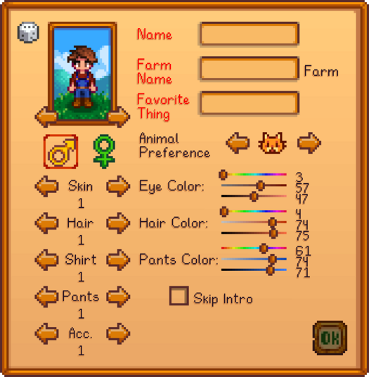

About
25/11/2023
Stardew Valley is an open-ended country-life RPG! You’ve inherited your grandfather’s old farm plot in Stardew Valley. Armed with hand-me-down tools and a few coins, you set out to begin your new life. Can you learn to live off the land and turn these overgrown fields into a thriving home? It won’t be easy. Ever since Joja Corporation came to town, the old ways of life have all but disappeared. The community center, once the town’s most vibrant hub of activity, now lies in shambles. But the valley seems full of opportunity. With a little dedication, you might just be the one to restore Stardew Valley to greatness!

Basics
25/11/2023
Stardew Valley is an open-ended game, allowing the player to achieve goals non-linearly.
There are various ways to earn income and many activities to choose from including farming, fishing, foraging, mining, combat (fighting enemies), crafting, cooking, gift giving, completing quests, donating to the Museum and restoring the Community Center.
The character creation screen allows customization options, such as character Appearance, Gender, Name, Farm Name, Favorite Thing, and Animal Preference.

Crops
25/11/2023
Crops are plants that are grown from seeds to be harvested for the purpose of profit, food, or gifting. Generally, each crop is seasonal. It can be planted only during its designated season, and when seasons change (after the 28th day), the crop will wither and die. Multi-season crops (i.e., Ancient Fruit, Coffee Bean, Corn, Sunflower, and Wheat), however, will continue to grow during all specified seasons.